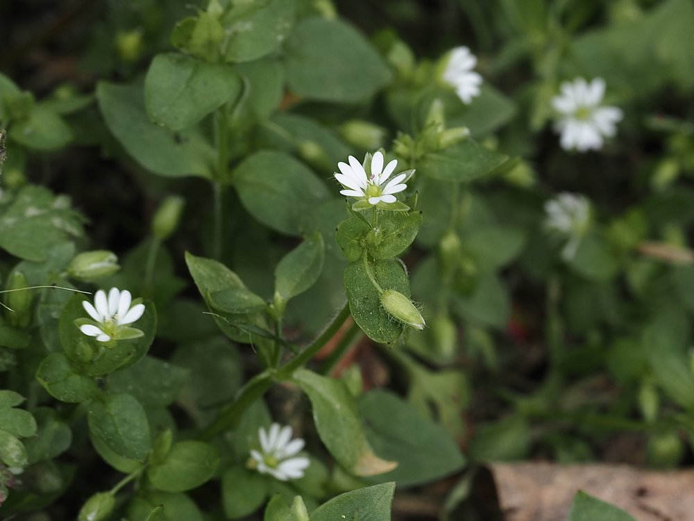

Das beliebteste Vogelfutter der Welt – und ein Barometer in Pflanzenkostüm.


Das Pflanzen-Barometer
Die Vogelmiere öffnet ihre Blüten bei gutem Wetter und schliesst sie vor Regen. Bauern nutzten sie als natürliches Wetterprogramm: Bleibt die Vogelmiere bis 8 Uhr geschlossen, regnet es. Ob das wirklich zuverlässig ist, sei dahingestellt – aber die Pflanze reagiert tatsächlich auf Luftfeuchtigkeit und Lichtstärke.
Haarlinie am Stängel – ein geniales Merkmal
Die Vogelmiere hat ein einzigartiges Merkmal: Am Stängel läuft eine einzige Haarlinie von Blattknoten zu Blattknoten – und dreht sich dabei um den Stängel herum. Warum? Niemand weiss es genau. Aber es ist das sicherste Bestimmungsmerkmal für Anfänger und ein unterhaltsames Detail auf jeder Exkursion.
Wissenswertes & Merksätze
Haarlinie zeigen
Das einzelne Haarband am Stängel – einmal gesehen, nie mehr vergessen. Ein perfektes Bestimmungsmerkmal für Anfänger.
Das ganze Jahr essbar
Als einzige Pflanze dieser Liste blüht und wächst die Vogelmiere auch im Januar. Ein verlässliches Wildgemüse für jede Jahreszeit.
Vogelmagnet
Kein Wildvogelfutter enthält so viel Vogelmiere-Samen wie der Boden unter einem alten Gartenbeet – Amseln und Finken schätzen sie sehr.